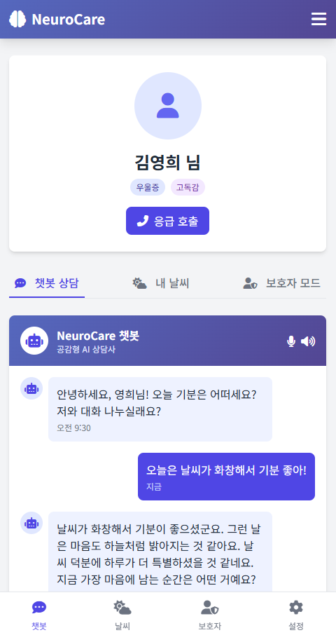
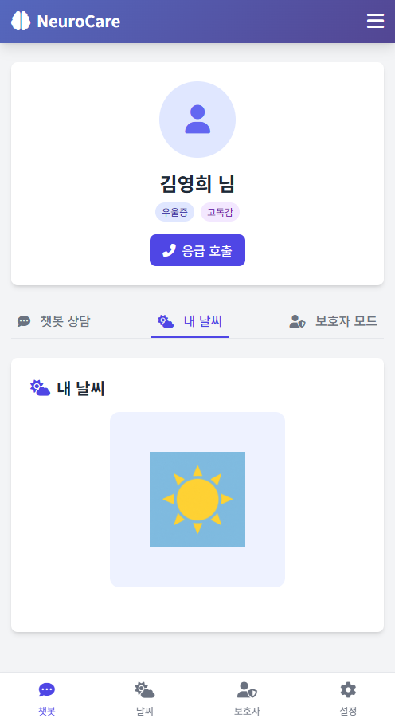

NeuroCare
같은 데이터,
서로 다른 돌봄 경험.
고령 사용자는 부담 없이 대화하고, 보호자는 돌봄에 필요한 정보를 확인하도록 두 사용자의 화면을 연결한 AI 정서 돌봄 서비스입니다.


대화로 시작하는 정서적 돌봄
독거노인 돌봄에서 신체적 안전뿐 아니라 일상 대화를 통한 정서적 돌봄에 주목했습니다. 고령 사용자와 보호자가 각자의 상황에 맞게 정보를 확인하도록 구성한 서비스입니다.
서로 다른 사용자,
서로 다른 정보
고령 사용자에게 복잡한 지표와 단정적인 점수는 부담이 될 수 있습니다. AI 응답을 기다리는 동안 진행 상태가 보이지 않으면 서비스가 작동하는지 알기 어렵습니다. 보호자에게는 개인 상담 내용 전체보다 돌봄에 필요한 요약이 필요했습니다.
두 사용자의 화면을 연결
사용자와 보호자 화면, 모바일 반응형 UI, AI 응답을 기다리는 상태와 오류 안내를 구현했습니다. 팀의 진행 상황을 조율하며 필요한 기능과 구현 가능성을 기준으로 우선순위를 정하고 역할·일정을 공유했습니다.
정보·대기·이동의 흐름
- 01
사용자에 따라 정보를 구분하기
고령 사용자의 정서 상태는 날씨 아이콘과 시각 요소로 표현했습니다. 보호자에게는 상태 변화와 위험 신호 등 돌봄에 필요한 정보만 구조화해 보여주었습니다.
- 02
기다리는 과정도 화면에 담기
메시지를 즉시 표시하고 AI 응답 대기 중에는 타이핑 인디케이터를 보여주었습니다. 실패 시에는 재시도를 안내하도록 구성했습니다.
- 03
모바일의 이용 흐름 고려하기
챗봇, 내 날씨, 보호자 모드를 탭으로 나누고 모바일에서는 하단 내비게이션으로 전환했습니다.
대화에서 보호자 알림까지
고령 사용자용 대화·정서 상태 화면과 보호자용 요약·알림 화면을 구현했습니다. 모바일 반응형 UI와 AI 대기·실패 상태를 포함했습니다.
누구에게 어떻게 보여줄 것인가
프론트엔드는 데이터를 출력하는 역할을 넘어, 누구에게 어떤 정보를 어떤 방식으로 보여줄지 판단하는 과정이라는 것을 배웠습니다. 팀 내 의견을 사용자 필요와 구현 가능성이라는 공통 기준으로 조율하는 경험도 쌓았습니다.
Posture Correction System
Contact
window101906@gmail.com